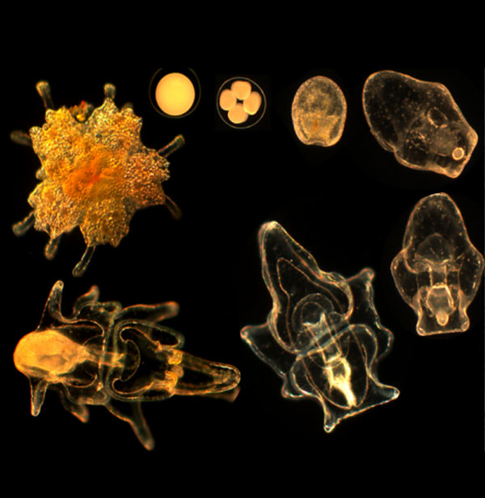

Life of a Sea Star

Starfish are cool.
Have you ever wondered where starfish come from? There are two ways for starfish to reproduce, sexually and asexually. For sexual reproduction, starfish go through several stages of life. In the first stage, gamete fertilization, the female starfish releases her eggs into the water and the male releases his sperm into the water. Similar to fish and frogs, the sperm fertilizes the egg and forms the gamete. Successful fertilization will result in viable eggs that wrap around the zygote. This is followed by the early stage of development the where zygote forms into a bilateral larva which will eat the small microorganisms in the water. After several days or weeks, the larva (Bipinnaria) will change into a Brachiolaria which will settle into a suitable habitat and develop the radial shape with multiple arms we think of as a starfish. Once they have morphed into the adult form they start to grow.
Asexual reproduction usually occurs when a starfish has been severely injured. Starfish can re-grow their arms. Sometimes the separated limbs will also regenerate, creating a new creature. Some starfish are even hermaphroditic and can fertilize their own eggs, they incubate their offspring to the Bipinnaria form because their surroundings are not conducive to the survival of Larvae.
Fun Facts:
- Sea stars have two stomachs and no teeth. They catch and hold their prey with suction cups and then eject one stomach to digest their prey externally and pull their stomachs back in when they finish eating.
- Sea stars have no blood or a central brain. They have simple nervous systems and cylce sea water through their limbs to move.
- There are over 2000 species of sea stars. The smallest species is the Patiriella parvivipara and the lagest species is the Sunflower star which ha between 10 and 20 legs on average. Some species can have up to 40 arms.
- Sea stars have hundrens of tiny tube like feet on the underneath of each limb which they use to move around the sea floor.
- Sea stars are not actually fish and starfish is actually an incorrect name. Sea stars do not have fins, gills, or scales. Sea Stars are actually Echinoderms and in the same animal family as sand dollars, sea urchins, crinoids, and sea cucumbers.